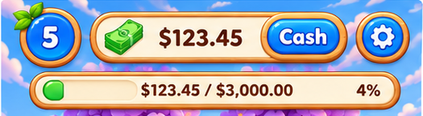
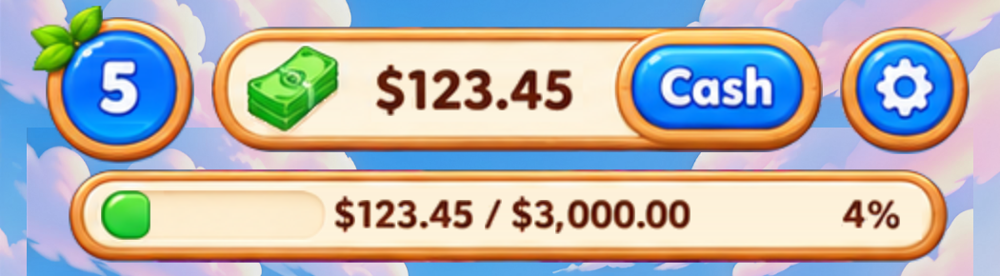
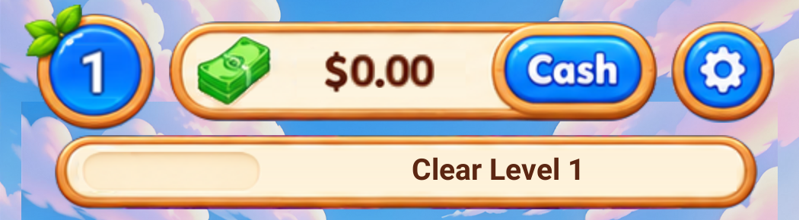
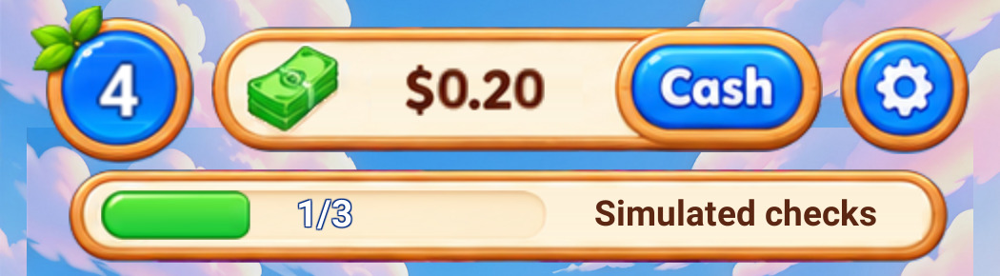

等级、纸币、金额栏、Cash、设置、任务进度槽及数字字形均在实际 B Prefab 中替换。下方为真实 Unity 场景的运行渲染。


两图统一为 525×145 显示尺寸。参考为 board-01 原图裁切；实际图是完整 1050×1662 运行渲染的顶部像素裁切。背景保持实际游戏场景。
1080×1920 完整运行图 · 参考画幅完整图


本轮只核对顶部 HUD，四种状态均通过；Cash 标准 Button 可打开原有提现页面。确认稿和运行图均未重绘或替换成整张静态界面。字体使用拆分字形显示实际数据；未出现于确认稿的字形保留完整数字及地区符号支持。
A 方案、产品数值配置、生产存档及 A/B 选择均保留。完整商业化流程和 A/B 切换的既有检查见上一轮记录。本轮为 Unity 离屏运行渲染，并非手机截图或全画面逐像素相等证明。
本轮验证明细 · 上一轮全页记录 · 上下排列对比图（上：确认稿，下：实际）